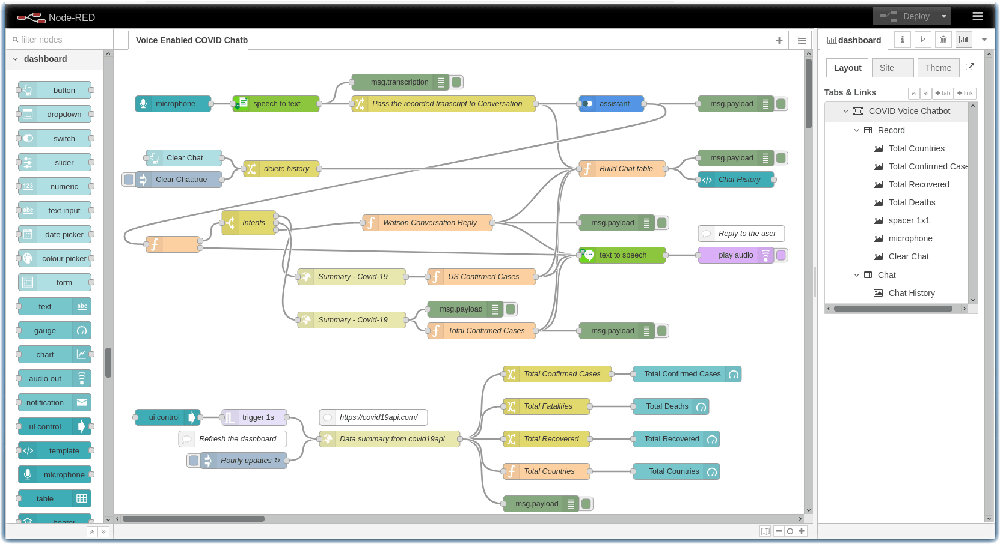

Voice Enabled Chatbot using Node-RED
Warning
This material is part of the World Wide IBM Call for Code 2020 Solution Starter Kit. Some links may not be working, however, the original contents are kept for reference only.

Please refer to the hyperlink for more information on the COVID Crisis Communications Starter Kit.
Prerequisite
- Register for an IBM Cloud account, if you do not have an account yet. Otherwise, please proceed to IBM Cloud login
- Please Refer to each step prerequisite